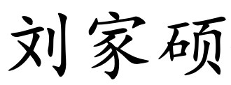
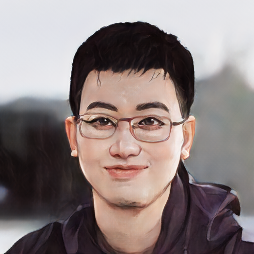

|
Jiashuo Liu 
THU TrustWorthy-AI Group
Department of Computer Science and Technology
Tsinghua University
Beijing, China. 100084.
Office: Room 9-316, East Main Building
Email: liujiashuo77@gmail.com
Twitter: liujiashuo77 (Let's follow each other🤩🤩🤩)
|

|
Biography
I'm a Phd student in the Department of Computer Science and Technology at Tsinghua University, advised by Prof. Peng Cui. I got my Bachelor degree in the Department of Computer Science and Technology at Tsinghua University in 2020.
I'm now serving as the editor-in-chief of the CausalAI Community for Beijing Academy of Artificial Intelligence (BAAI). My research interests include Out-of-Distribution Generalization, Invariant Learning, Robust Learning and Machine Learning for Biology.
And I'm now the maintainer of the OOD generalization paper list(page). And here is my CV.
Conference Papers
-
Jiashuo Liu*, Zheyuan Hu*, Peng Cui, Bo Li, Zheyan Shen. Kernelized Heterogeneous Risk Minimization, NeurIPS, 2021(*: equal contribution).
-
Jiashuo Liu, Zheyuan Hu, Peng Cui, Bo Li, Zheyan Shen. Heterogeneous Risk Minimization, ICML, 2021(Spotlight).
-
Jiashuo Liu, Zheyan Shen, Peng Cui, Linjun Zhou, Kun Kuang, Bo Li and Yishi Lin. Stable Adversarial Learning under Distributional Shifts, AAAI, 2021.
-
Zimu Wang, Yue He, Jiashuo Liu, Wenchao Zou, Philip Yu, Peng Cui. Invariant Preference Learning for General Debiasing in Recommendation. In SIGKDD Conference on Knowledge Discovery and Data Mining (KDD), 2022.
-
Haoxin Liu, Ziwei Zhang, Peng Cui, Yafeng Zhang, Qiang Cui, Jiashuo Liu, Wenwu Zhu. Signed Graph Neural Network with Latent Groups. In SIGKDD Conference on Knowledge Discovery and Data Mining (KDD), 2021.
-
Zheyan Shen, Peng Cui, Jiashuo Liu, Tong Zhang, Bo Li and Zhitang Chen. Stable Learning via Differentiated Variable Decorrelation. In SIGKDD Conference on Knowledge Discovery and Data Mining (KDD), 2020.
Journal Papers
-
Chongxuan Li, Kun Xu, Jun Zhu, Jiashuo Liu and Bo Zhang. Triple Generative Adversarial Networks.Transactions on Pattern Analysis and Machine Intelligence. (TPAMI)
-
Dacheng Xu, Benda Xu, Erjin Bao, Yiyang Wu, Aiqiang Zhang, Yuyi Wang, Geliang Zhang, Yu Xu, Ziyi Guo, Jihui Pei, Hanyang Mao, Jiashuo Liu, Zhe Wang, Shaomin Chen. Towards the ultimate PMT waveform analysis for neutrino and dark matter experiments. Journal of Instrumentation(JINST)
Preprints
-
Jiashuo Liu, Jiayun Wu, Jie Peng, Zheyan Shen, Bo Li and Peng Cui. Distributionally Invariant Learning: Rationalization and Practical Algorithms.
-
Jiashuo Liu, Zheyan Shen, Peng Cui, Linjun Zhou, Kun Kuang, Bo Li and Yishi Lin. Distributionally Robust Learning with Stable Adversarial Training. (Under review)
-
Zheyan Shen*, Jiashuo Liu*, Yue He, Xingxuan Zhang, Renzhe Xu, Han Yu, Peng Cui. Towards Out-of-Distribution Generalization: A Survey.(*: Equal Contributions))(Under review)
-
Xingxuan Zhang, Zekai Xu, Renzhe Xu, Jiashuo Liu, Peng Cui, Weitao Wan, Chong Sun, Chen Li. Towards Domain Generalization in Object Detection. (Under review)
Talks and Presentations
Heterogeneous Risk Minimization. (ppt)
-
Invited by Kun Kuang's group, Lab of Artificial Intelligence, Zhejiang University, Oct. 18, 2021 (Online)
-
Abstract: Machine learning algorithms with empirical risk minimization usually suffer from poor generalization performance due to the greedy exploitation of correlations among the training data. Recently, invariant learning methods for Out-of-Distribution (OOD) Generalization have been proposed by leveraging multiple training environments to find causally invariant relationships. However, modern datasets are frequently assembled by merging data from multiple data sources without explicit source labels. The resultant unobserved heterogeneity renders most of the invariant learning methods inapplicable. To deal with OOD Generalization problem with latent heterogeneity, we propose the Heterogeneous Risk Minimization (HRM) framework to achieve joint learning of data heterogeneity and invariant relationships at the raw feature level. Then we extend the HRM framework to more complicated data and propose Kernelized Heterogeneous Risk Minimization (KerHRM) algorithm. We theoretically characterize the roles of the environment labels in invariant learning and justify the rationality of our framework. Extensive experimental results also validate the effectiveness of our proposed methods.
From Latent Heterogeneity to Out-of-Distribution Generalization.(ppt)
-
Invited by the Beijing Academy of Artificial Intelligence (BAAI), Nov. 5, 2021 (Online)
From Latent Heterogeneity to Out-of-Distribution Generalization.(ppt)
-
Invited by Badong Chen's group, Institute of Artificial Intelligence and Robotics, Xi'an Jiaotong University, Nov. 26, 2021 (Online)
Selected Honors and Awards
National Scholarship, 2021
Excellent graduate of Tsinghua University, 2020
Excellent graduate of Department of Computer Science and Techonology, Tsinghua University, 2020
Teaching
2021 Fall TA Software Engineering, Instructed by Prof. Jianyong Wang
2020 Fall TA Software Engineering, Instructed by Prof. Dan Pei
2019 Fall TA Software Engineering, Instructed by Prof. Xiaoying Bai
Academic Service
Conference Reviewer: AAAI2022, CVPR 2022, IJCAI 2022, ICML 2022, UAI 2022
Journal Reviewer: TMM
Last updated on June. 08, 2022.